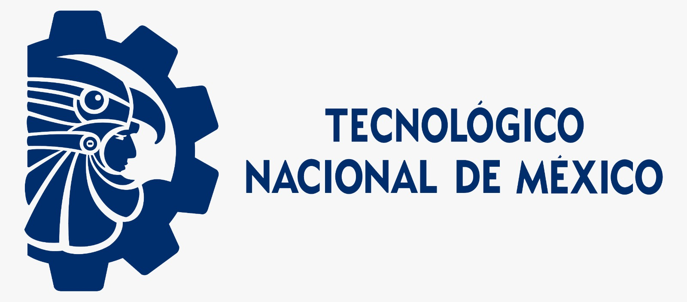
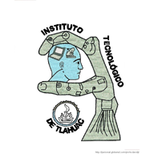
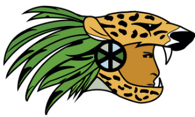
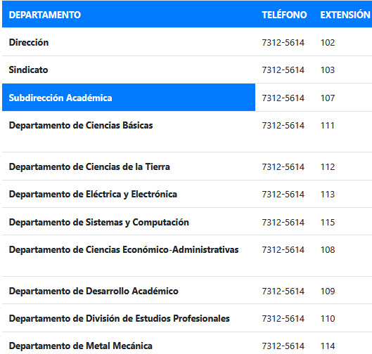
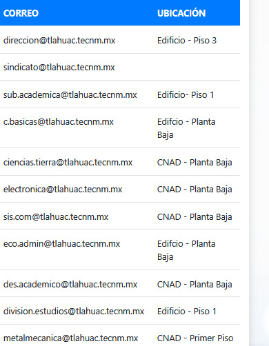
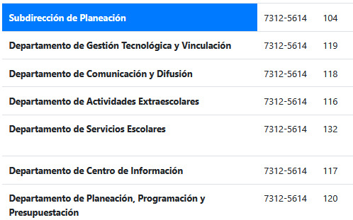
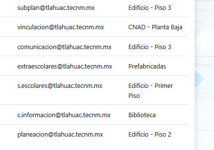
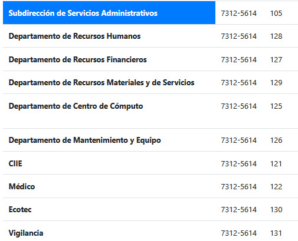
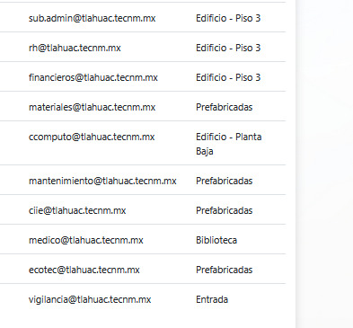
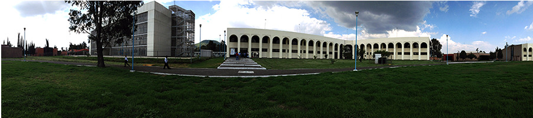

Podemos darle un vistazo a la filosofía del Tecnm Tlahuac ❤️
"LA ESENCIA DE LA GRANDEZA RADICA EN LAS RAÍCES"

FILOSOFÍAVISIÓN:
Ser una institución de alto desempeño académico,
en la formación integral de profesionistas
competitivos a nivel internacional con responsabilidad
global.
MISIÓN:
Ofrecer un servicio educativo de calidad a través
de la mejora continua, personal capacitado,
compromiso global e infraestructura de vanguardia.
VALORES:
Los valores que manejamos en la institución son
los que nos ayudan a identificarnos como seres humanos,
como personas que estan al servicio de la educación,
que les gusta la actividad que desarrollan y que estan
orgullosos de promover un servicio de calidad a la
comunidad.
° Honestidad° Respeto° Trabajo en equipo° Vocación de servicio° Comunicación.
POLÍTICA INTEGRAL:
TecNM establece el compromiso de implementar y
todos sus procesos estratégicos y del proceso educativo,
hacia la Calidaddel Servicio Educativo y respeto del medio ambiente,
dando cumplimiento a los requisitos del estudiante y
partes interesadas, legislación ambiental aplicable y
otros requisitos ambientales que se suscriban así
como promover en su personal, estudiantes y partes
interesadas la prevención de la contaminación y el uso
racional de los recursos; mediante la implementación,
operación y mejora continua de un Sistema de Gestión de
Calidad conforme a la Norma ISO 9001:2015/NMX-CC-9001-IMNC-2015
y un Sistema de Gestión Ambiental conforme a la Norma
ISO 14001:2015/NMX-SAA-IMNC-14001-2015, coadyuvando a la
conformación de una sociedad justa y humana con una perspectiva
de sustentabilidad y ser uno de los pilares fundamentales del
desarrollo sostenido y sustentable.
POLÍTICA DE IGUALDAD LABORAL Y NO DISCRIMINACIÓN DEL TECNOLÓGICO NACIONAL DE MÉXICO:
Tecnológico Nacional de México manifiesta su compromiso con la defensa de los derechos
humanos, por lo que en la esfera de su competencia garantizará el principio de igualdad
sustantiva entre mujeres y hombres en el ejercicio de sus derechos laborales, así como el
derecho fundamental a la no discriminación en los procesos de ingreso, formación y promoción
profesional, además de sus condiciones de trabajo, quedando prohibido el maltrato, violencia
y segregación de las autoridades hacia el personal y entre el personal en materia de cualquier
forma de distinción, exclusión o restricción basada en el origen étnico o nacional, apariencia
física, cultura, sexo, género, edad, discapacidad, condición social o económica, condiciones de
salud, embarazo, lengua, religión, opiniones, preferencias sexuales, estado civil, situación migratoria
o cualquier otra, que tenga por efecto impedir o anular el reconocimiento o el ejercicio de los derechos
y la igualdad real de oportunidades.
Podemos darle un vistazo al himno de los Tecnm ❤️
"LA ESENCIA DE LA GRANDEZA RADICA EN LAS RAÍCES"
HIMNO DE LOS INSTITUTOS TECNOLÓGICOS
A medida que los pueblos y sus Instituciones se
desarrollan, se convierte en una necesidad crear
elementos o símbolos que les permita sentirse
integrados a objetivos comunes. Desde tiempos
perdidos en la historia, el hombre ha plasmado a través
de composiciones musicales, el elemento que identifique sus
aspiraciones y que al ser escuchados se conviertan en un
esfuerzo para el espíritu de trabajo y de superación.
El Sistema Nacional de Institutos Tecnológicos al llegar a su
cuarenta aniversario, consideró también la necesidad de contar
con un himno que aglutinara los objetivos institucionales:
la historia de su breve, pero fecunda vida al servicio de
México y sus aspiraciones por una Patria más pujante y
ejemplar. Por tal motivo, se convocó a la comunidad tecnológica
del país y al público en general a participar en el concurso
para la creación del HIMNO A LOS INSTITUTOS TECNOLÓGICOS en el
año de 1987.
Este concurso fue sancionado por los señores Doctores Octavio
Valdez, Manuel Ponce Zavala y Tarcicio Herrera Sapién, miembros del
Seminario de Cultura Mexicana. La Letra del himno de los Institutos
Tecnológicos que fue triunfadora en este concurso, correspondió a un
trabajador del Tecnológico de Parral el Profr. Enrique Moreno García.
El autor de la música es el arquitecto Luis Arellano Ríos, empleado
del Instituto Tecnológico de Orizaba.
CORO
Tecnológico, luz de la ciencia;
plataforma para el porvenir;
la técnica forjas conciencia
para darnos feliz devenir.
ESTROFA I
Por la década de los cuarentas,
manantial de la ciencia brotó
en Durango y Chihuahua sedientas
que el venero a la sed apagó.
En el norte, en el sur y el oriente
Institutos florecen doquier,
esparciendo también del poniente
el aroma sutil del saber.
CORO
Tecnológico, luz de la ciencia;
plataforma para el porvenir;
con la técnica forjas conciencia…
para darnos feliz devenir..
ESTROFA II
El Sistema de los Tecnológicos
el espíritu crítico creó
generando los métodos lógicos
con los cuales mil logros halló;
investiga, proclama y convida
de la ciencia el saber superior
que transforma del hombre la vida
entregándole un mundo mejor.
CORO
Tecnológico, luz de la ciencia;
plataforma para el porvenir;
con la técnica forjas conciencia…
para darnos feliz devenir..
Podemos darle un vistazo al logo del Tecnm Tlahuac ❤️
LOGOTIPO
El escudo del Instituto Tecnológico de Tláhuac,
representa la íntima relación que existe en la
actualidad entre la vida del ser humano y el
desarrollo tecnológico y fue creado por el Arq.
Javier Flores Romero.
En él se observa como elemento principal una mano
robótica, que representa el conjunto de las tres
ingenierías que se imparten desde el inicio del
Instituto que son: Ingeniería en Sistemas Computacionales,
Ingeniería en Electrónica e Ingeniería Mecatrónica; dicha
mano robótica sostiene y protege una cabeza humana, que
representa la vida de nuestra especie.

Dentro de la cabeza se observa una antena de
telecomunicaciones y una lap-top que representan la
gestación y el desarrollo del conocimiento que permite
los avances tecnológicos que existen en nuestros días.
Como elemento adicional, se puede observar el escudo de la delegación
Tláhuac, de la que toma el nombre el Tecnológico, y se
incluye como símbolo del sentimiento de pertenencia que
ha caracterizado desde su inicio la actividad del Instituto.
Podemos darle un vistazo al lema del Tecnm Tlahuac ❤️
"LA ESENCIA DE LA GRANDEZA RADICA EN LAS RAÍCES"
La esencia que puede llegar a representar una Institución
distinguiéndola entre las demás debe ser única e irremplazable,
teniendo raíces fuertes desde su crecimiento hasta su desarrollo,
siempre recordando donde nacimos, crecimos y maduramos en nuestra
sociedad, adoptando una grandeza digna notable y llena de orgullo.
Podemos darle un vistazo a la mascota del Tecnm ❤️
MASCOTA
La idea del Guardián surge a partir de uno de
los significados de la palabra “Tláhuac”.
Como es sabido, la palabra “Tláhuac” tiene
múltiples acepciones. Una de ellas es la de Guardián
de las aguas y fue a partir de ésta idea, que el
arquitecto Javier Flores Romero, docente fundador
de nuestro Instituto, creó la primera imagen de la que se
convertiría en la mascota oficial del Tecnológico.
Originalmente concebido como una criatura fantástica que
combinaba elementos de un guerrero prehispánico, con un jaguar
humanizado, el emblema del Guardián fue evolucionando más hacia
una representación de un caballero jaguar, y su diseño final fue
un trabajo en conjunto entre el M.A. V. César P. A. Reyes Mérida
y el Mtro. Jorge Alberto Olayo Valles.

Podemos darle un vistazo al directorio del Tecnm Tlahuac ❤️






Podemos darle un vistazo a la historia del Tecnm Tlahuac❤️
NUESTRA HISTORIA

El Instituto Tecnológico de Tláhuac es una Institución
de Educación Superior que pertenece a la Secretaría de Educación
Pública y que tiene el compromiso con los jóvenes de México para
seguir brindándoles una oportunidad de continuar con sus estudios
universitarios. Al ser una entidad federal que depende de la Dirección
General de Educación Superior Tecnológica, nos integramos entonces a la
red más grande de formadores de ingenieros en México y América Latina
ofreciendo 41 opciones de licenciatura, 7 programas de especialización,
22 programas de maestría con orientación profesional, 28 programas de
maestría en ciencias y 15 programas de doctorado en ciencias, todos ellos
repartidos a lo largo y ancho del país, distribuidos en 262 planteles
El Instituto Tecnológico de Tláhuac nace en septiembre del 2008
con la necesidad de la comunidad de la misma demarcación de atender
la demanda estudiantil de nivel superior que para ese entonces exigía
la población. Surgió con una infraestructura mínima de espacios prefabricados
prestados, con tan solo un director, ingeniero Heriberto Herrera Colocía y 4
colaboradores directivos y una plantilla de 15 docentes, fue como se inició
el gran sueño aperturando 3 carreras: ingeniería en sistemas computacionales,
ingeniería en electrónica e ingeniería en mecatrónica.
NUESTRA HISTORIA
Para el año 2009 el Instituto Tecnológico cumplía un año desde su creación
y fue en ese mismo año que se obtuvo la licitación para la construcción de un
edificio y compra de equipamiento que representa una inversión de más de 70
millones de pesos, beneficiando así a la matrícula escolar que era ya de casi
mil estudiantes.
En el 2010 fue sede del XVI Encuentro Nacional de Bandas de Guerra y
Escoltas de los Institutos Tecnológicos, dando atención en el centro de la
Ciudad de México a estudiantes de todo el país y participando con 656 estudiantes
del plantel para dar apoyo a más de 2,000 visitantes de todo el país. Ese mismo año
y continuando con la prioridad de la educación en atención a nuestra demanda, en agosto
se oferta la carrera de arquitectura, convirtiéndose en la segunda con mayor demanda
de las 3 con las que se había iniciado.
NUESTRA HISTORIA
Para el 2011 la atención a estudiantes ya era de 1,800 jóvenes que se sumaban al sueño
de continuar con el crecimiento del plantel. Al mismo tiempo del reconocimiento de la
comunidad docente que era ya de 120 personas y de la unidad directiva que estaba integrada
por 22 miembros, todos siempre trabajando en conjunto para fortalecer el desempeño académico,
así a finales de este año se dio apertura a la unidad académica departamental con 28 salones,
2 laboratorios, 2 centro de cómputo, 1 centro de voz y datos, 1 laboratorio de mecatrónica que
alberga una Célula Integral de Manufactura (CIM), 2 salas de juntas y espacio para oficinas en
atención a toda nuestra comunidad tecnológica.
El año 2012 inició para el instituto con la visita del Presidente de la República. Fue en
esa misma visita donde dió un recorrido por las instalaciones, saludando al personal docente y
a la comunidad estudiantil, brindando un espacio para el intercambio de ideas y explicación de
conocimientos de nuestros estudiantes. Fue entonces que dentro del discurso que dió la orden para
que se construyeran 2 canchas deportivas para beneficio y desarrollo de nuestra comunidad tecnológica.
Cabe mencionar que las actividades deportivas, cívicas y culturales son importantes para nuestro plan de
estudios de todas las carreras, ya que ayudan a que el estudiante tenga una formación integral, haga deporte
y se despeje del desempeño académico que muchas veces puede ser exhaustivo.
NUESTRA HISTORIA
Por tal motivo en el 2012 el
Tecnológico fue sede del LVI Evento Prenacional Deportivo, en donde jóvenes de todo México compiten por
deportes de conjunto e individuales para representar a nuestro sistema en las competencias nacionales.
Así entonces 2,032 estudiantes en este año fueron a los que se les dio atención ofertando en nuestro plantel
22 actividades extraescolares (ya sea cívicas, culturales y deportivas) lo que representa el 90% del total de
nuestra matrícula. Fue también en este mismo año que el Instituto Tecnológico de Tláhuac obtuvo la mención como
el tercer lugar nacional en crecimiento de matrícula; y al mismo tiempo como el mejor tecnológico de la Ciudad
de México de los 12 existentes.
NUESTRA HISTORIA
No cabe duda de que el crecimiento apresurado de este plantel relativamente nuevo, a 5 años de su creación
ha sido debido al trabajo y a las estrategias de liderazgo empleadas para su buen desempeño. En el 2013 fue sede
de la Reunión Nacional de Consolidación de la Carrera Ingeniería en Sistemas Automotrices, que albergó a 50
institutos
tecnológicos para realizar trabajos del plan de estudios que se oferta en el sistema a partir de agosto del
2013.
De la misma forma se eligió al Instituto como sede de la Reunión Nacional de Vinculación del Sistema Nacional de
Institutos Tecnológicos (SNIT), atendiendo a los 262 planteles con jefes de gestión tecnológica y vinculación o
en
su caso con subdirectores de planeación y vinculación, en donde el objetivo principal fue darle continuidad al
trabajo
que tienen a su cargo los representantes de cada plantel para generar alianzas con el campo laboral en donde los
estudiantes sean siempre los beneficiados al momento de realizar servicio social o residencias profesionales.
En este mismo año, del 17 al 21 de septiembre el Instituto Tecnológico de Tláhuac, fue también sede del Evento
Nacional de Innovación Tecnológica 2013 – Fase Regional, prestando servicio y atención a 53 Institutos
Tecnológicos
y a 110 proyectos los cuales fueron evaluados por jurados del sector industrial público y privado, así como por
expertos
en la materia, haciendo selección de los proyectos que representarían a sus tecnológicos a nivel nacional.
NUESTRA HISTORIA
Ya para el 2014 se consolidó mucho del trabajo que se había realizado desde años anteriores, el primero
de ellos fue trabajar con el Modelo de Educación Dual con el Sistema de Transporte Colectivo METRO, en el cual
nuestros estudiantes cursan sus materias de especialidad en el campo laboral, dicho proyecto también nos llevo
a universidades de Alemania para conocer más acerca de éste sistema de educación y generar alianzas con
universidades
como Comillas, España. Así mismo los beneficios a estudiantes fueron mayores obteniendo 326 becas en diferentes
rubros,
en los que destaca la Beca de apoyo a tu entorno, donde apoyados por el departamento que gestiona el Programa
Verde
Institucional – ECOTEC se destacaron proyectos sustentables beneficiando a nuestra comunidad tecnológica y
teniendo impacto en las zonas aledañas. Así mismo la proyección de nuestro tecnológico en el exterior se
consolido;
fuimos uno de los tecnológicos a participar en la Carta a Río, celebrada en Río de Janeiro, Brasil y fué a
mediados de
éste mismo año que por decreto presidencial se forma el Tecnológico Nacional de México, TecNM, propuesta como la
cuarta
oferta a nivel nacional para cursar estudios de nivel superior.
NUESTRA HISTORIA
Proyectos como FESE – Mi Primer Empresa en conjunto con nuestro tecnológico apoyaron a pequeños
emprendedores y microempresarios para proyectar sus empresas y materializar sus inversiones y poder venderlas.
El caso de éxito de el Robot Humanoide, desarrollado por egresados de la carrera de ingeniería en mecatrónica y
que actualmente se exhibe en el Museo del Juguete en México, así como los estudiantes y docentes que fueron
beneficiados
con becas en Estados Unidos y España, hacen de nuestro Instituto Tecnológico una nueva opción dentro de la
Ciudad de México.
NUESTRA HISTORIA
Para el 2015 el Tecnológico se encuentra consolidado en cuanto a la demanda solicitada por la comunidad
interesada en estudiar en éste plantel, así mismo la vinculación con las empresas se fortalece y después de
casi un año de trabajo en conjunto con el Sistema de Transporte Colectivo – METRO, se logra que el Tecnológico
Nacional de México firme el primer convenio en Educación Dual, en donde se beneficia a los estudiantes.
Del mismo modo, el impacto social del Programa Verde Institucional ECOTEC, llega a diferentes estados del país
y uno de nuestros equipos de estudiantes asisten al Congreso Internacional de Química e Ingeniería Verde,
realizado en Monterrey, en donde se hace una presentación especial con éste equipo. Junto con éste proyecto
se unen los emprendedores de FESE, los cuales obtienen la atención de canal 40 para realizar un programa
especial
sobre su trabajo de emprendimiento, al igual que otros estudiantes ganan una mención especial, compitiendo con
estudiantes de universidades públicas y privadas a nivel Ciudad de México por parte de la automotriz KIA.